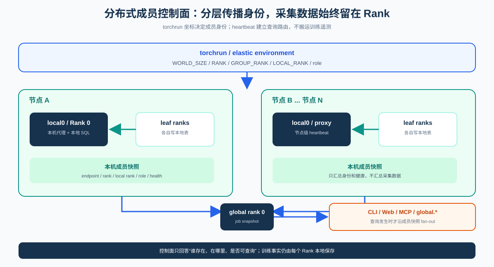
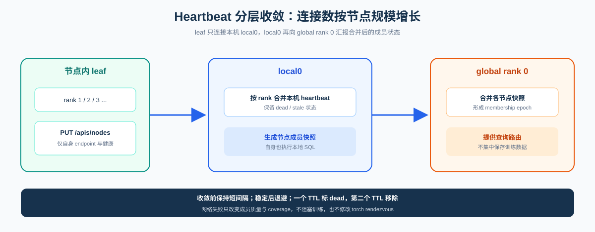
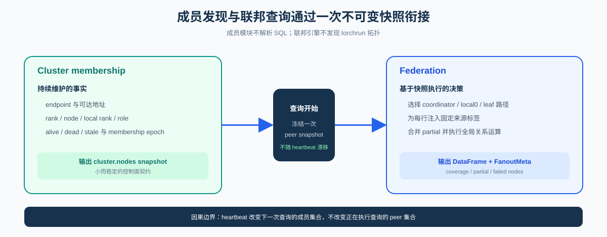

Distributed Membership and Control Plane¶
This page defines how Probing discovers and maintains probe membership for a distributed training job. Every rank still writes local tables. Cross-rank catalogs, execution paths, and result correctness belong to the Federated Query Engine.
Status: implemented. Membership registration lives in
probing-server; it does not modify torch rendezvous data or blockinit_process_group.
Overall structure¶

| Role | Owns | Does not own |
|---|---|---|
| leaf rank | reports endpoint, rank, and role; executes local SQL | global membership or recursive fan-out |
| local0 | aggregates on-node heartbeats; node query proxy | torch rendezvous mutation |
| global rank 0 | job membership snapshot and query entry | centralized training telemetry |
cluster.nodes |
endpoint membership and health | torch process-group semantics |
Heartbeat carries only identity and health metadata. Collected evidence remains rank-local until a query requests it.
Cluster membership lifecycle¶
Startup¶
The Rust constructor starts maybe_start_torchrun_cluster() when Probing is enabled,
WORLD_SIZE > 1, PROBING_TORCHRUN_CLUSTER != 0, and the process is not an elastic supervisor.
It binds HTTP, discovers master/local0 addresses through the job TCPStore, and starts an async
heartbeat worker. Python no longer patches torch.distributed.init_process_group;
setup_torchrun_cluster() remains an explicit/test facade.
Hierarchical registration¶

TCPStore keys are isolated under:
The store endpoint may be shared with torch rendezvous; rendezvous keys are untouched.
PUT /apis/nodes merges heartbeats by rank; GET /apis/nodes and cluster.nodes expose the sorted
snapshot. Registration carries rank/world size, group/local rank, host, reachable address, and role.
Convergence and expiry¶
Before full membership, heartbeats stay at the base interval. Once stable, they back off
exponentially. One stale TTL marks a member dead; a second removes it. The effective maximum interval
is capped by STALE_SEC - STALE_SEC/4 - 1. With the default stale value 25 seconds, the safe maximum
is about 18 seconds. Increase stale to roughly 90 seconds for a stable interval near 60 seconds.
probing.set_role(...) followed by refresh_node_role() sends an immediate update for _role.
Discovery and control entry points¶
| Need | Entry | Scope |
|---|---|---|
| local probe processes | probing list |
local sockets/processes |
| remote endpoint | probing -t host:port list |
one endpoint |
| job snapshot | probing -t rank0:port cluster nodes |
cluster.nodes |
| local SQL | probing -t endpoint query "..." |
local probe.* |
| cross-rank SQL | cluster query or global.* |
federation |
HTTP reachability and Engine readiness are distinct states; connection success does not prove the rank is ready to execute a query.
Boundary with federation¶

Membership supplies peer identity, liveness, and rank/node/role metadata. Federation consumes one snapshot to choose peers, inject source tags, and report coverage/partial failures. Membership does not parse SQL or merge DataFrames; federation does not discover torchrun topology.
The coordinator → local0 → leaf execution topology is defined in Federated Query Engine — hierarchical fan-out.
Configuration¶
| Variable | Default | Meaning |
|---|---|---|
PROBING_TORCHRUN_CLUSTER |
1 |
initialize torchrun membership |
PROBING_CLUSTER_REPORT |
1 |
periodic heartbeat |
PROBING_CLUSTER_REPORT_BACKOFF |
1 |
back off after convergence |
PROBING_CLUSTER_REPORT_INTERVAL_SEC |
10 |
base interval |
PROBING_CLUSTER_REPORT_MAX_INTERVAL_SEC |
120 |
configured maximum, stale-capped |
PROBING_CLUSTER_REPORT_BACKOFF_FACTOR |
2 |
backoff factor |
PROBING_CLUSTER_STALE_SEC |
25 |
dead/removal TTL base |
PROBING_CLUSTER_DISCOVER_TIMEOUT_SEC |
2 |
TCPStore discovery timeout |
PROBING_CLUSTER_REPORT_TIMEOUT_SEC |
5 |
heartbeat PUT timeout |
PROBING_ADVERTISE_ADDR |
inferred | peer-reachable address |
PROBING_NODE_HOST |
inferred | host identity for grouping |
All peers must use the same PROBING_AUTH_TOKEN; internal discovery, heartbeat, and query calls
carry credentials. See Environment variables.
Constraints and implementation¶
- Heartbeat failure must not terminate the host training process.
- Training callbacks perform no heartbeat network I/O; server workers own it.
cluster.nodesis endpoint membership, not a proof of an ideal torch rank set.- External mmap schemas such as
pulsing.*are not implicitly merged into membership. - NTP/PTP is still required for meaningful cross-node wall-clock alignment.
| Concern | Location |
|---|---|
| torchrun startup and heartbeat | probing/server/src/torchrun_cluster.rs |
| registry and snapshots | probing/core/src/core/cluster.rs |
| HTTP contract | probing/server/API.md, tests/regression/spec/api_spec.json |
| multinode example | examples/cluster/run_multinode.sh |
See Federated Query Engine and SQL Tables.